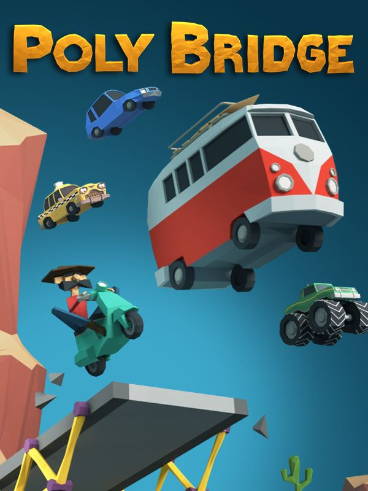

Poly Bridge
Poly Bridge
Detalhes
|  | |
| Tempo de jogo | 5m 0s |
| Última Atividade | 15/12/2022 18:30:53 |
| Adicionado | 11/02/2025 13:17:41 |
| Modificado | 11/02/2025 13:30:37 |
| Status de Conclusão | Jogado |
| Biblioteca | Steam |
| Fonte | Steam |
| Plataforma | PC (Windows) |
| Data de Lançamento | 12/07/2016 |
| Pontuação da Comunidade | 75 |
| Avaliação da crítica | 75 |
| Pontuação do Usuário | |
| Gênero | Indie Puzzle Simulator |
| Desenvolvedor | Dry Cactus |
| Editor | Dry Cactus |
| Funções | Single Player |
| Links | Steam iPhone Official iPad Android Twitch |
| Tag | |
Descrição
Use suas habilidades em engenharia neste novo e envolvente simulador de construção de pontes repleto de recursos.
Passe horas resolvendo quebra-cabeças no modo Campanha e, em seguida, crie seu próprio design no modo Caixa de Areia.
Desafie seus amigos e outros membros da comunidade na Oficina do Steam para que tentem resolver seus quebra-cabeças, e aproveite para baixar os novos níveis enviados por outros jogadores.
Os níveis ficam cada vez mais complicados, no aspecto da engenharia, com restrições dos recursos que você pode utilizar na construção da sua ponte.
Domine o terreno e crie a ponte mais complexa do mundo – ou qualquer invenção absurda que leve a mecânica do jogo a uma nova direção. E, se quiser, publique seu novo design on-line em forma de desafio na Oficina para todos tentarem resolver!
Os designs mais legais e originais aparecerão em destaque, ficando mais fácil encontrar as pontes mais desafiadoras!
Salve um GIF animado superlegal da sua ponte no ápice da glória (ou da derrota!) e guarde localmente. Carregue-o na Galeria On-line do Poly Bridge e/ou compartilhe no Twitter, Facebook, Reddit ou Tumblr sem precisar sair do jogo!
Confira a Galeria On-line em !
Passe horas resolvendo quebra-cabeças no modo Campanha e, em seguida, crie seu próprio design no modo Caixa de Areia.
Desafie seus amigos e outros membros da comunidade na Oficina do Steam para que tentem resolver seus quebra-cabeças, e aproveite para baixar os novos níveis enviados por outros jogadores.
Confira a Galeria On-line em !
+100 Níveis de Campanha
Divirta-se construindo pontes, superando centenas de níveis – que vão desde pontes básicas, para veículos leves, às complexas pontes levadiças multiplataformas com rampas, por exemplo.Os níveis ficam cada vez mais complicados, no aspecto da engenharia, com restrições dos recursos que você pode utilizar na construção da sua ponte.
Modo Caixa de Areia
O que seria de um incrível jogo de construção de pontes sem um modo Caixa de Areia igualmente incrível?Domine o terreno e crie a ponte mais complexa do mundo – ou qualquer invenção absurda que leve a mecânica do jogo a uma nova direção. E, se quiser, publique seu novo design on-line em forma de desafio na Oficina para todos tentarem resolver!
Suporte da Oficina
Baixe milhares de novos níveis na Oficina do Steam!Os designs mais legais e originais aparecerão em destaque, ficando mais fácil encontrar as pontes mais desafiadoras!
Compartilhamento de replay
Uma de nossas funções favoritas no jogo!Salve um GIF animado superlegal da sua ponte no ápice da glória (ou da derrota!) e guarde localmente. Carregue-o na Galeria On-line do Poly Bridge e/ou compartilhe no Twitter, Facebook, Reddit ou Tumblr sem precisar sair do jogo!
Confira a Galeria On-line em !
Mecânicas Avançadas
Mostre suas habilidades em engenharia com as ferramentas de construção avançadas e design de nível do jogo, como:- Sistema hidráulico avançado
- Controle hidráulico multifases (controla qual pistão hidráulico ativa)
- Sistema de base em nós
- Vários tipos de pontos de controle
- Ferramentas de copiar e colar
- Ferramentas de marcação linear (desenhe arcos ou linhas retas perfeitas e preencha com o material que quiser)
- E muito mais...